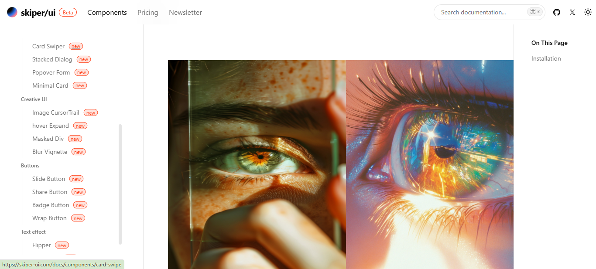

I explored a modern UI library this week called Skiper UI, and I genuinely feel like it deserves way more attention than it’s getting. It’s been stuck in my mind ever since I started using it, and I really want to put my thoughts into words. This is a spoiler-free review — just me sharing what I loved about the experience.

How It Started
It’s Monday, and I’m not really in the mood to work on my usual design systems. So, I took a quick scroll through Instagram to clear my head. That’s when I stumbled upon a reel by @sheryians_coding_school — and in that short clip, they were showcasing something that instantly caught my attention: Skiper UI.
Modern React + Tailwind UI components with motion and polish
I'd never heard of it before, but the sleek motion, crisp UI, and animated components shown in the reel immediately hooked me. It looked fresh, flexible, and exactly the kind of developer-friendly tool I love exploring. So, I followed the link, checked the docs, and the deeper I went, the more impressed I became.
Skiper UI is a modern component library built with React, Tailwind CSS, TypeScript, and Framer Motion. It’s one of those rare indie projects that feels instantly premium — like it was created by someone who truly cares about both developer ergonomics and clean design.
"Like shadcn/ui, but built with animation in its DNA" – that’s how I’d describe it in a nutshell. But saying that barely scratches the surface. The components are responsive, easy to customize, and genuinely enjoyable to use. The experience of combining structure with motion adds personality to even basic UI elements.
What really stood out to me was how interactive everything felt. From buttons to cards to dropdowns — nothing felt static. The motion is smooth but not distracting, and it gives your projects that extra polish with minimal effort. And the documentation? Super clean and easy to follow. You can tell this library was built for devs who want results fast, without sacrificing quality.
What Surprised Me About Skiper UI
I didn’t go looking for a new UI library — it found me. While scrolling through Instagram, a reel from @sheryians_coding_school flashed by, showcasing smooth UI transitions, beautifully animated buttons, and sleek modern components. That was my introduction to Skiper UI. I paused. Rewatched. Then dove in.
At first, I assumed it was just another Tailwind + React component combo — but I was wrong. Skiper UI isn’t trying to be a giant all-in-one framework. It’s focused. Clean. Sharp. Every component feels deliberate, as if made by a designer who’s also a developer — or vice versa. This isn’t just UI, it’s rhythm.
"You don’t just drop components — you craft motion, layout, and emotion into your interface."
As I explored more, it clicked. This wasn’t built for beginners or bloated dashboards. It was for builders who value movement, clarity, and fast iteration — especially those working with Next.js or React.js projects. The animations are subtle but effective. The styling respects Tailwind’s utility power while giving you a modern, polished edge.
Above this article, I’ve included a short video that walks you through the magic. It highlights exactly what I experienced — the fluidity of cards, the way modals pop with personality, and how quick it is to get started. If you're curious what it feels like to use Skiper UI without writing a single line of code first, watch that demo.
Honestly, it reminded me why I love frontend development. The small details — transitions, hover delays, easing curves — they’re all there, and they matter. Skiper UI doesn’t scream for attention, but it earns it.
If you're a developer looking for motion-first, production-ready UI components that just "click" with Tailwind and React, don’t overlook this one. Skiper UI is a quiet powerhouse — and once you try it, it’s hard to go back.
It’s totally free to play — and that’s hard to beat! Download it now on the Google Play Store and start brawling.